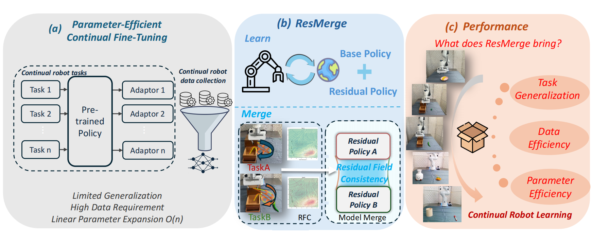

Consider a scenario: you have a generalist robot policy and a robot deployed in a home or factory environment. The robot needs to continuously learn 5–10 new tasks as they arrive sequentially—each task Tk comes with its dataset Dk, and the policy must be adapted to handle all tasks without degrading performance on previously learned ones.
Challenges
Existing continual learning (CL) methods are not well suited for adapting pre-trained policies:
- Poor generalization — IL-based PECFT methods often fail to generalize to new task variants.
- Catastrophic forgetting — Sequential fine-tuning causes severe parameter interference and performance collapse on old tasks.
- Costly continual data collection — Most PECFT methods rely on large amounts of demonstrations per task.
- Parameter inefficiency — Maintaining separate adapters per task leads to linear parameter growth and deployment complexity.
Our Approach
ResMerge addresses these by (1) using residual RL for data-efficient adaptation without demonstrations, and (2) using RFC-guided merging to consolidate compatible residuals, improving parameter efficiency and multi-task capability while avoiding geometric conflicts that cause task-similarity-based merging to fail.
